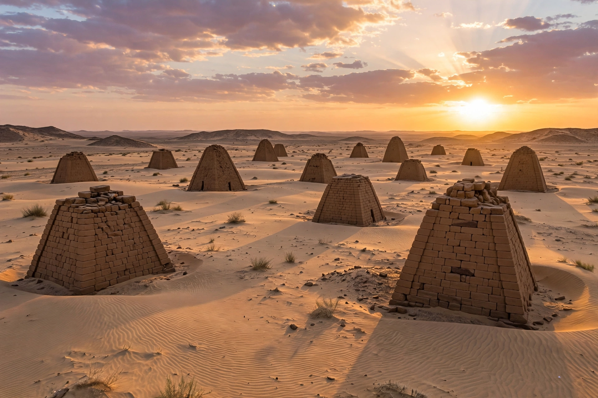

| Nuri | |
|---|---|
| Location | Northern State, Sudan |
| Region | Nubia |
| Type | Royal pyramid cemetery |
| Founded | c. 664 BC (by Taharqa) |
| Excavated | 1916–1919, George Reisner |
| UNESCO | World Heritage Site (2003, Napatan Region) |

Nuri is a place in modern Sudan on the west bank of the Nile, near the Fourth Cataract and close to Jebel Barkal and the ancient city of Napata. It is best known as the royal burial ground of the Kushite kings of Napata, containing more than 80 pyramids — the largest such cemetery of the Kingdom of Kush.
The cemetery was founded by Taharqa, the most powerful king of Egypt's Twenty-fifth Dynasty, who around 664 BC built his pyramid (Nu. 1) at Nuri rather than at the older royal cemetery of el-Kurru used by his predecessors Piye and Shabaka. Taharqa's pyramid, about 29 metres square and originally some 40–50 metres high, is the largest in Nubia. Nearly all subsequent Napatan kings were buried at Nuri, down to Nastasen in the late 4th century BC, after which the royal necropolis moved south to Begrawiya near Meroë. Queens were buried in a separate section of the cemetery.
Nuri was excavated in 1916–1919 by the American Egyptologist George Andrew Reisner for the Harvard University–Museum of Fine Arts, Boston expedition. Despite ancient plundering, the tombs yielded rich finds, including gold jewellery, alabaster vessels and thousands of ushabti figures from Taharqa's burial. In recent decades the site has been threatened by rising groundwater linked to the Merowe Dam, and new archaeological missions have worked to document and preserve the flooded royal tombs.